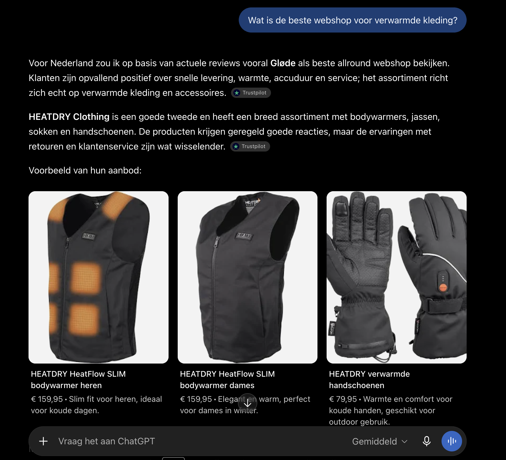

Het antwoord noemt een handvol merken. Sta jij ertussen, dan win je de klant. Sta je er niet bij, dan kiest hij een concurrent — zonder jou ooit gezien te hebben. Ik zorg dat jouw webshop hét antwoord wordt.
Gratis & vrijblijvend · je ziet meteen waar je staat in ChatGPT & andere AI
Er zijn een paar goede opties, afhankelijk van wat je zoekt:
Sta jij ertussen — of noemt AI je concurrent?
Jarenlang draaide alles om die eerste plek in de zoekresultaten. Maar inmiddels gebruiken 7,2 miljoen Nederlanders dagelijks AI — en dat aantal groeide in één jaar van 5 naar ruim 7 miljoen. Steeds vaker klikt je klant niet meer, maar vraagt hij het aan een AI. Die geeft één antwoord, met een paar namen erin. Een ander spel, met andere regels.
Tien blauwe links, en de klant kiest zelf. Je concurreert op posities, zoekwoorden en advertentiebudget. Wie het hoogst staat, wint de klik.
Eén antwoord, een handvol merken. Geen lijst om uit te kiezen — één aanbeveling om op te volgen. Sta je ertussen, dan win je de klant. Sta je er niet bij, dan kiest hij zonder jou.
AI-modellen bevelen merken aan die ze tegenkomen in reviews, vergelijkingen en verrijkte productdata — en die ze herkennen als een echte, betrouwbare bron. Ik bouw precies dat, elke maand, aantoonbaar.
Ik schrijf de koopgidsen, vergelijkingen en antwoorden die jouw klanten zoeken — precies het soort teksten waar ChatGPT en andere AI-modellen hun aanbevelingen op baseren. Dit werk ik volledig voor je uit, jij hoeft niets te schrijven.
Reviews op Trustpilot, Google en Kiyoh structureel opbouwen. AI leunt zwaar op wat anderen over je zeggen — hoe sterker je reviewprofiel, hoe vaker je genoemd wordt.
Ik bouw autoriteit op rond jouw merk en faciliteer artikelen op andere websites — zodat je opduikt in "beste webshop voor…"-lijstjes, vergelijkingssites en vakmedia. Precies de onafhankelijke bronnen waarop AI zijn aanbevelingen baseert.
De techniek onder de motorkap: productdata verrijken, FAQ's, en een heldere structuur — zodat AI je webshop volledig begrijpt en makkelijk kan citeren.
Een consistente, professionele uitstraling online — van je bedrijfsprofiel tot je vindbaarheid — zodat AI je herkent als een echte, betrouwbare speler in je markt.
Iedere maand toets ik dezelfde koopvragen, met screenshots als bewijs. Je ziet zwart-op-wit hoe je stijgt — en tegen welke concurrenten.
Van een verzorgd bedrijfsprofiel tot het volgen van elke nieuwe AI-ontwikkeling en de kleine verbeteringen die onderweg naar boven komen — ik hou het allemaal voor je in de gaten. Zo hoef jij nergens naar om te kijken. Jij runt je webshop, ik zorg dat AI je aanraadt.
Ik heb meer dan 8 jaar ervaring in e-commerce en verdiep me al lange tijd in AI — niet als hobby ernaast, maar als de plek waar ik de grootste verschuiving in online verkopen zag aankomen. Naast wordtgenoemd run ik egantic.ai en Furpely, allebei in de e-commerce funnel. Ik ken die wereld dus niet uit een cursus, maar van binnenuit.
Bij mij krijg je geen bureau met accountmanagers en een inlogportal. Je krijgt mij — direct, persoonlijk en betrokken. Ik zeg eerlijk wat werkt en wat niet, en je weet altijd precies waar je aan toe bent.
Ik doe eigenlijk meer dan "aan AEO werken". Alles wat ik voor je bouw — sterke content, echte reviews, vermeldingen bij anderen en een verzorgde uitstraling — zorgt dat je merk professioneler en betrouwbaarder overkomt.
En dat betaalt zich dubbel uit: niet alleen word je vaker door AI genoemd, je wint ook meer vertrouwen bij klanten, meer naamsbekendheid en uiteindelijk meer verkopen. AI-zichtbaarheid is het startpunt — een sterker merk is wat je overhoudt.
"Giel had binnen no-time helder waar wij wél en niet genoemd werden in ChatGPT — met echte cijfers en screenshots, geen vaag verhaal. En het mooiste: hij kréég ons er ook daadwerkelijk in. Waar we eerst nergens verschenen bij belangrijke zoekvragen, worden we nu genoemd. Hij denkt echt met je mee en levert gewoon. Top geregeld."
Geen mockup, maar een echte vraag aan ChatGPT. Mijn eerste klant HeatDry wordt genoemd als antwoord op precies de vraag die hun klanten stellen.

Op deze koopvraag noemt ChatGPT HeatDry — precies waar het om draait: genoemd worden op het moment dat je klant om advies vraagt, nog voordat hij bij Google kijkt.
Dit is geen toeval, maar het resultaat van het werk dat ik elke maand lever: content, reviews, vermeldingen en techniek die AI je laat herkennen en aanbevelen.
◆ echte screenshot · ChatGPTGeen adviesrapport dat je zelf mag uitvoeren — ik doe het werk, van A tot Z. Begin met een losse nulmeting, of ga direct voor een maandpakket. Altijd maandelijks opzegbaar, geen lange contracten.
Ik meet waar jouw webshop nu staat in ChatGPT, Perplexity en andere AI — op tientallen echte koopvragen uit jouw branche. Je krijgt een helder rapport: waar je genoemd wordt, waar niet, welke concurrenten jouw plek krijgen, en de concrete kansen om te stijgen. Inclusief screenshots als bewijs en een overzicht van je belangrijkste zoekwoorden.
Alle prijzen excl. btw · maandelijks opzegbaar · geen verborgen kosten. Grotere webshop met specifieke wensen of meer volume nodig? Vraag een offerte op maat aan.
7 korte vragen over de signalen die bepalen of ChatGPT je noemt. Aan het eind zie je je score, je profiel — en precies wat je mist.
Vul je mail in en ik stuur je je verbeterpunten op volgorde van impact — plus een échte meting van je huidige AI-zichtbaarheid, met screenshots. Gratis.
🔒 Geen spam · uitschrijven kan altijd
Op volgorde van impact. Ik neem ze straks met je door in je persoonlijke meting.
📬 Je persoonlijke analyse met screenshots komt binnen 2 werkdagen in je inbox.
Ik doe een persoonlijke test voor jouw webshop: ik vraag AI wat het aanraadt in jouw branche, en kijk of jij genoemd wordt of niet. Je krijgt van mij een helder overzicht — waar je al opduikt, waar je onzichtbaar bent, welke concurrenten jouw plek krijgen, en de eerste concrete kansen om te stijgen. Precies wat ik ook voor mijn klanten doe, eenmalig gratis voor jou.
✓ Bedankt! Ik bekijk je webshop en stuur je persoonlijke AI-scan binnen 2 werkdagen in je inbox.
Beperkt beschikbaar · ik doe ze persoonlijk, dus vol = vol